In this new era of banking, financial payment services giants like Stripe, Square etc, made credit card payments seamless and the credit card transactions have been increasing by multiples every year¹ (source). Thus also resulting in Credit card fraud reports doubling every year² (source).
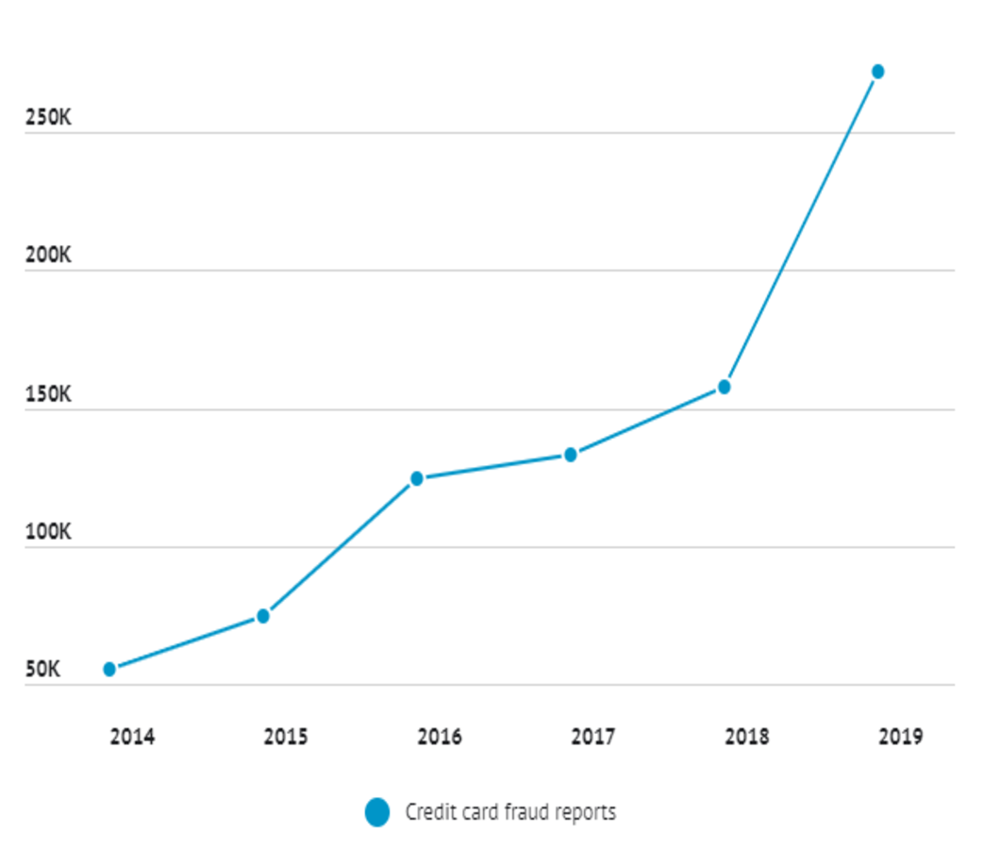
What is an Anomaly?
An Anomaly is something that deviates from what is normal or expected. In credit card transactions, most of the fraudulent cases deviate from the behavior of a normal transaction. It's subjective to say what normal transaction behavior is but there are different types of anomaly detection techniques to find this behavior³. Here we’ll be discussing three types of techniques.
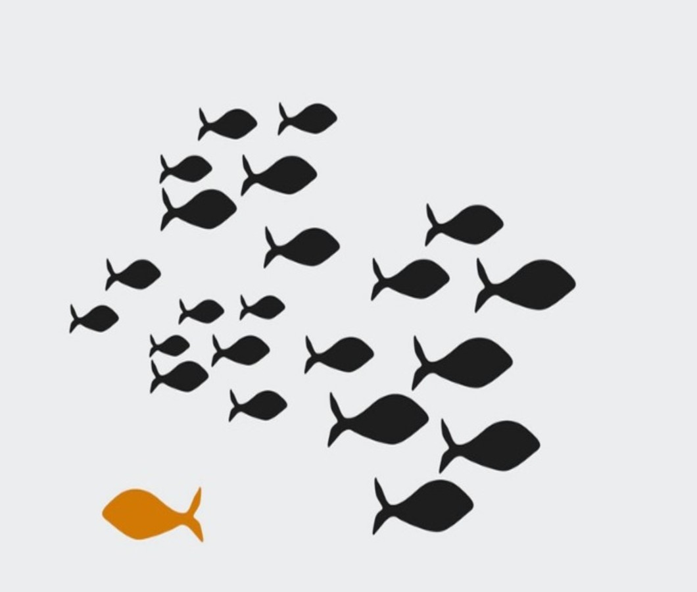
Credit Card Fraud Detection case:
I’m considering the kaggle Credit Card Fraud Detection for carrying out anomaly detection⁴.
Downloading the datasets from API calls:
First download your API token by going to your Kaggle My Account (https://www.kaggle.com/*Your-Username*/account), going to section ‘API’ and clicking on ‘create new API token’. You will now download a file called ‘kaggle.json’. You have to upload this file to your colab notebook.
uploaded = files.upload()
You can now use the code given below to download and unzip the dataset.
!pip uninstall -y kaggle!pip install --upgrade pip
!pip install kaggle==1.5.6
!kaggle -v
!mkdir -p ~/.kaggle
!cp kaggle.json ~/.kaggle/
!chmod 600 ~/.kaggle/kaggle.json
!kaggle datasets download -d mlg-ulb/creditcardfraud
!unzip creditcardfraud.zip
Pre-Processing:
In the given dataset there are 492 frauds out of 284,807 transactions, I’m considering a sample of 0.1 for our analysis without losing outlier fraction for further unsupervised learning. The outlier fraction is 0.001723.
data= creditcard.sample(frac=0.1,random_state=1).reset_index(drop=True)
Setup to initialize the environment in pycaret⁵ and creates the transformation pipeline to prepare the data for modeling and deployment.
X = setup(data, ignore_features = ['Class'], session_id = 123)Y = data['Class']
1. Isolation Forest:
The Isolation forest algorithm segregates observations by randomly selecting a feature and then randomly selecting a split value between the maximum and minimum values of selected feature similarly constructing the separation by creating random decision trees⁶. Thus, an anomaly score is calculated as the number of conditions required to separate a given observation.
Building the model:
We can build the model using create_model function in pycaret package, one can modify the parameters accordingly using the following code.
print(iforest)
Finding Isolation forest anomaly scores and labels using assign_model⁷ function.
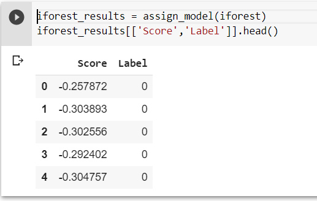
Evaluation:
ROC_AUC for the Isolation forest is 0.935.
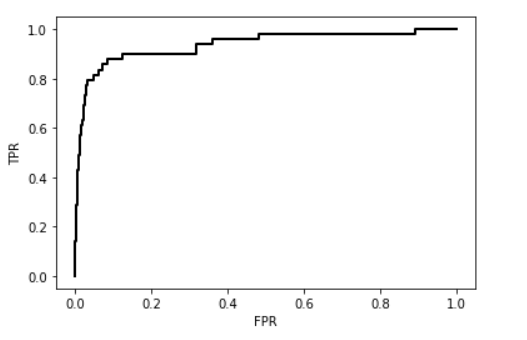
2. Angle-base Outlier Detection:
In Angle-based outlier detection addresses the problem of high-dimensionality by comparing angles between pairs of distance vectors to consider as an anomaly rather than using distance directly⁸.
Building the model:
We can build the model using create_model function in pycaret package, one can modify the parameters accordingly using the following code.
print(abod)
Finding ABOD scores and labels using assign_model function.
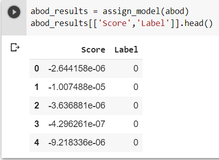
Evaluation:
ROC_AUC for the Angle-based outlier detection is 0.777.
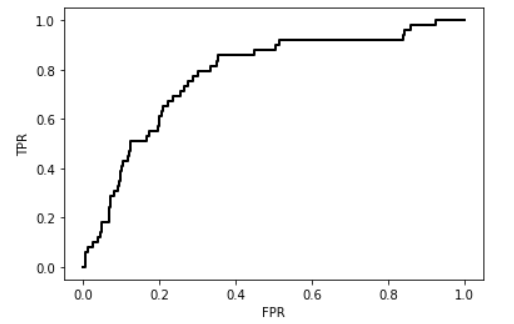
3. Subspace Outlier Detection:
The Subspace outliers are identified by finding localized regions of the data in low-dimensional space that have abnormally low density⁹.
Building the model:
We can build the model using create_model function in pycaret package, one can modify the parameters accordingly using the following code.
print(sod)
Finding SOD scores and labels using assign_model function.
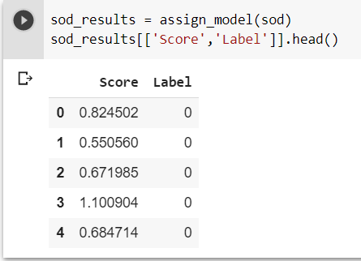
Evaluation:
ROC_AUC for the Subspace outlier detection is 0.942.
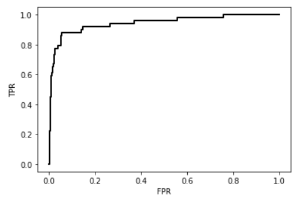
4. Minimum Covariance Determinant:
This is one of the most robust way of finding outliers where it considers using robust estimator called MCD estimator. This illustrates the masking effect: the classical estimates can be so strongly affected by contamination that diagnostic tools such as the Mahalanobis distances become unable to detect the outliers¹⁰. As the robust distances are not sensitive to the masking effect, they can be used to flag the outliers¹¹.
Building the model:
We can build the model using create_model function in pycaret package, one can modify the parameters accordingly using the following code.
print(mcd)
Finding MCD anomaly scores and labels using assign_model function.
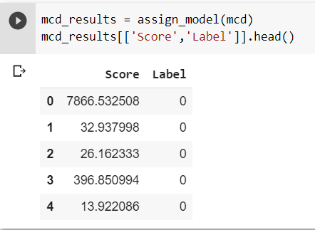
Evaluation:
ROC_AUC for the Minimum Covariance Determinant outlier detection is 0.906.
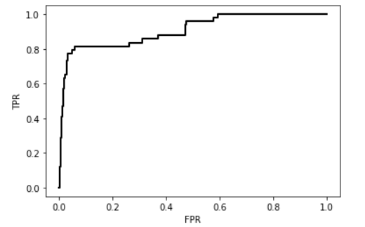
Comparing Results:
From all the four anomaly detection techniques for this kaggle credit fraud detection dataset, we see that according to the ROC_AUC, Subspace outlier detection comparatively gives better result.
Please check the detailed code of these anomaly detection techniques from this colab.
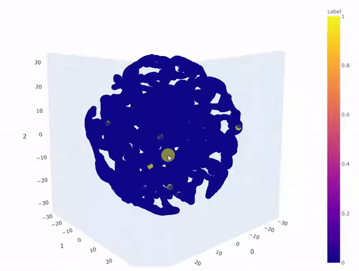
3d TSNE plot for outliers of Subspace outlier detection( yellow-fraud, blue-normal)
Conclusion:
Most of the Banks and payment services using different anomaly scoring methods either using one anomaly score or averaging the scaled anomaly scores of some of anomaly scoring techniques to make sure not to lose any fraudulent transactions.
References
1. Credit card statistics by year.
2. Credit card reports statistics.
3. Advances and Trends in Artificial Intelligence.
4. kaggle Credit Card Fraud Detection.
5. pycaret
6. Isolation Forest research paper.
7. pycaret assign_model.
8. Angle-base Outlier Detection research paper.
9. Subspace Outlier Detection research paper.
10. Anomaly Detection by Robust Statistics (MCD).
11. A Fast Algorithm for the Minimum Covariance Determinant Estimator.
This article is originally published on medium publication Towards Datascience